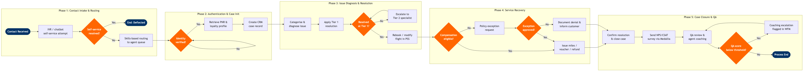

| Step | L4 Step Name | KPI / Target | Pain Point / Risk | Gate |
|---|---|---|---|---|
| 1.1 | Receive inbound contact via omnichannel | First contact resolution (FCR) rate ≥75% | Channel fragmentation — voice, chat, email, and social handled by separate queues, driving repeat contacts and inflated contact volume | |
| 1.2 | Attempt IVR / AI chatbot self-service | Self-service containment rate ≥40%; bot CSAT ≥3.8/5.0 | IVR containment collapses during IRROP events; customers bypass bot with repeated keypress-zero, spiking live agent demand by up to 300% | ⚠ |
| 1.3 | Route contact to skilled agent queue | Average Speed of Answer (ASA) ≤90 seconds; abandonment rate ≤5% | Skill-tag mismatches in WFM routing rules direct contacts to wrong specialisms (e.g. loyalty queries to general-service agents), increasing Average Handle Time by 20–35% | |
| 2.1 | Authenticate customer identity | Authentication success rate ≥98%; failed authentication escalation rate ≤1% | PCI-DSS compliance prohibits agents from handling raw card data; non-FFP member identity verification has no single standard, causing inconsistent agent behaviour and potential fraud exposure | ⚠ |
| 2.2 | Retrieve PNR and loyalty profile from PSS | PNR retrieval response time ≤5 seconds; PSS availability ≥99.9% | Codeshare or interline itineraries may not surface fully in Altéa; agent must switch to a partner portal or call partner CLC, adding 3–5 minutes per contact | |
| 2.3 | Create or update CRM case record | Mandatory field completion rate ≥99%; case creation accuracy ≥97% | Inconsistent reason-code taxonomy in Salesforce yields corrupted trend reporting; root-cause signals for systemic issues (e.g. baggage carousel failures) go undetected for hours | |
| 3.1 | Categorise and diagnose customer issue | First-call categorisation accuracy ≥90%; misroute rate ≤3% | IRROP-related contact spikes arrive before NOC disruption alerts propagate to Salesforce; agents categorise manually without system-side context, slowing diagnosis | |
| 3.2 | Apply Tier 1 resolution per service policy | Average Handle Time (AHT) ≤7 minutes; FCR ≥75% | Agents must toggle between Altéa and Salesforce with no unified desktop; dual-screen context switching increases AHT by 15–20% and introduces data-entry errors | ⚠ |
| 3.3 | Rebook or modify flight in PSS | Rebooking completion rate ≥95%; change-fee waiver audit compliance 100% | Involuntary rebooking fare-difference calculations require manual ATPCO fare rule lookup — no automated waiver logic in Altéa — leading to over- or under-collection and regulatory exposure | |
| 3.4 | Escalate unresolved case to Tier 2 specialist | Escalation rate ≤15%; Tier 2 resolution within 24 hours ≥90% | Case context is frequently lost during warm transfers; Tier 2 agents ask customers to repeat information, reducing CSAT by an average of 0.4 points per repeat | |
| 4.1 | Assess service recovery compensation eligibility | Compensation decision accuracy ≥98%; EC261 regulatory compliance 100% | EC261 applicability for EU-origin flights requires manual legal review — no automated rule engine in Salesforce; agents under volume pressure make incorrect eligibility decisions, creating regulatory liability | ⚠ |
| 4.2 | Issue compensation — miles, voucher, or refund | Miles crediting accuracy 100%; voucher issuance within 24 hours; DOT-mandated cash refund within 7 business days | Miles issuance, voucher generation, and PSS refund initiation are in three separate systems with no unified API; dual-entry requirement creates a 2–3% error rate on high-volume disruption days | |
| 4.3 | Process policy exception with supervisor approval | Exception approval turnaround ≤10 minutes; monthly exception rate tracked as % of total contacts | Supervisor approval queue backs up during IRROP events; customers placed on hold >5 minutes, reducing Customer Effort Score (CES) and increasing call abandonment | ⚠ |
| 5.1 | Confirm resolution and close case | Same-day case closure rate ≥85%; after-call work (ACW) time ≤90 seconds | Agents under volume pressure skip ACW documentation; incomplete case notes degrade QA coaching effectiveness and root-cause trending by up to 30% | |
| 5.2 | Trigger post-contact NPS / CSAT survey | Survey response rate ≥20%; NPS ≥45; CSAT ≥4.2/5.0 | Survey fatigue among frequent flyers who receive multiple survey requests per journey leg; opt-out rate rising 3–5% per quarter, eroding feedback sample size | |
| 5.3 | QA review, score, and coach agent | QA sample rate ≥10% of all contacts; QA score ≥85%; coaching session within 5 business days of flag | Manual QA sampling misses systemic issues; AI-assisted speech analytics available in NICE CXone but not fully deployed across all contact types, leaving compliance blind spots | ⚠ |